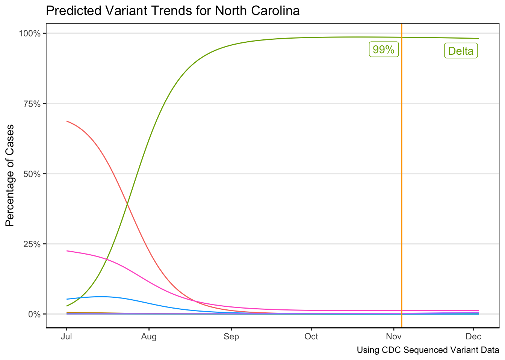
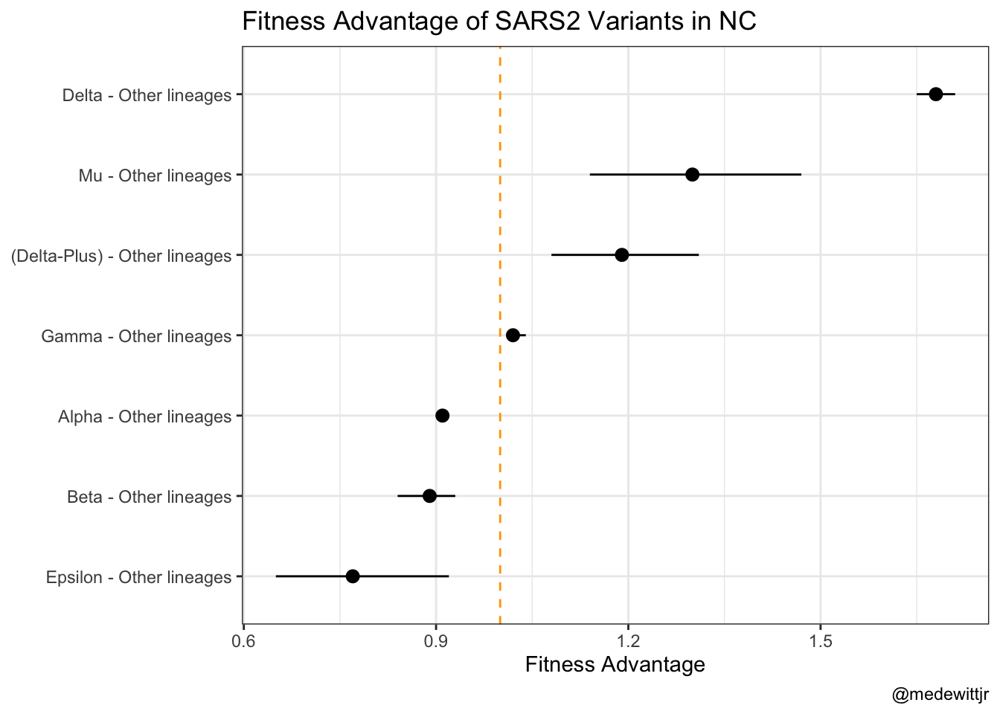

# weights: 32 (21 variable)
initial value 175734.436464
iter 10 value 33927.597097
iter 20 value 32237.752063
iter 30 value 31955.944214
iter 40 value 31952.229510
iter 50 value 31951.902649
iter 60 value 31950.766153
iter 70 value 31950.549171
iter 70 value 31950.549123
iter 70 value 31950.549123
final value 31950.549123
convergedsars2
Below represents the fitted variant progression in North Carolina.

The below table represents the estimate growth rate advantages of the different variants over wild-type variants. Values greater than one indicate an advantage over the wild-type. This assumes a generation time of 4.7 days.
| Contrast | Estimate | Lower | Upper |
|---|---|---|---|
| Alpha - Other lineages | 0.91 | 0.90 | 0.92 |
| Beta - Other lineages | 0.89 | 0.84 | 0.93 |
| Delta - Other lineages | 1.68 | 1.65 | 1.71 |
| (Delta-Plus) - Other lineages | 1.19 | 1.08 | 1.31 |
| Gamma - Other lineages | 1.02 | 1.01 | 1.04 |
| Epsilon - Other lineages | 0.77 | 0.65 | 0.92 |
| Mu - Other lineages | 1.30 | 1.14 | 1.47 |
